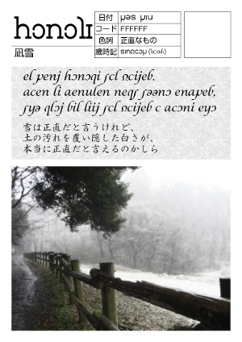
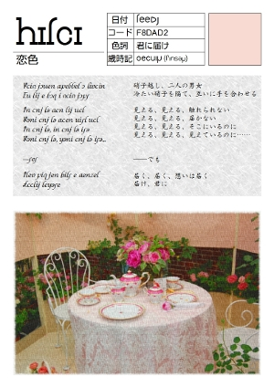

|
システィナ
アルバザードではメル暦という特殊な暦を使います。
一年は365日で閏年は366日というのは地球のグレゴリオ暦と同じです。
366日の各日付にはアルバザード固有の伝統色が宛てがわれています。
これをシスティナといいます。詳しくはこちらをご覧ください。
システィナの表はこちら。
上記のシスティナを使って次のような写真詩集を作ることができます。
色詞（いろことば）とは、各日付に与えられた固有の言葉のことで、色と関連性があります。
例えば純白には「正直」が宛てがわれています。
ruj ravの大市場(kaiwata)
teemsの後夜祭(t'anjur)
mel melのこどもの日(liizliiz)


|